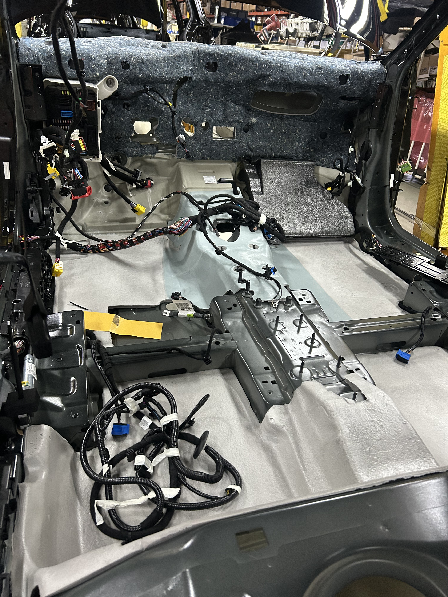
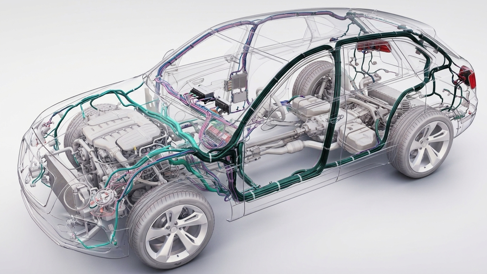
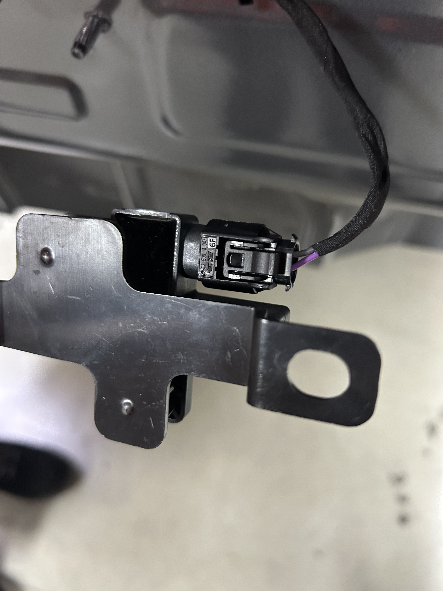
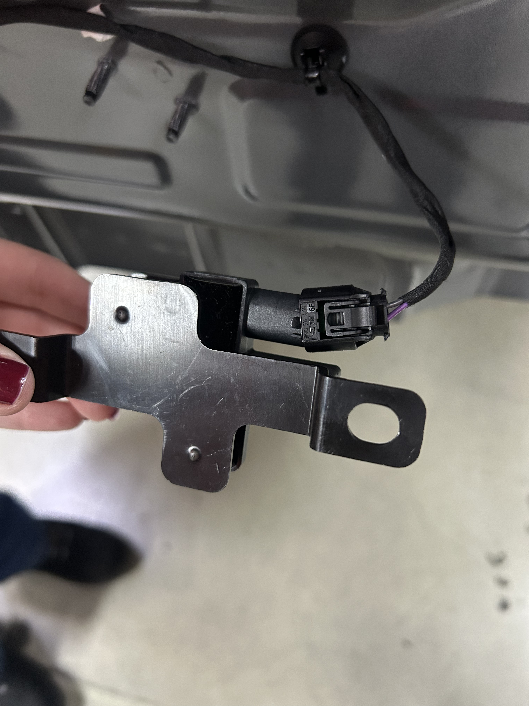
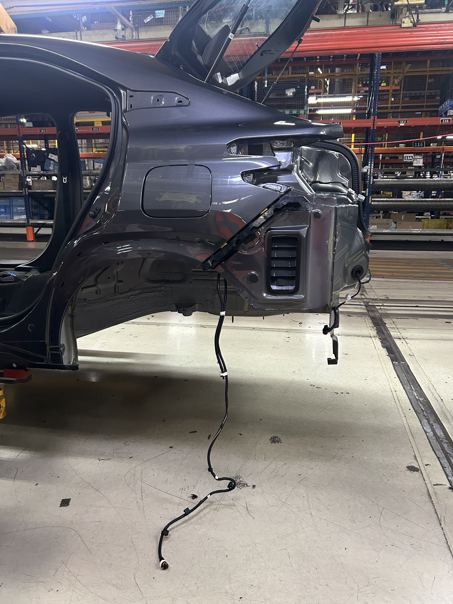

Alimentar
Bateria e alternador fornecem a energia necessária ao sistema.
Chicote elétrico automotivo
O chicote elétrico integra os sistemas do veículo, levando energia e sinais até cada componente.
Explorar o chicote
O chicote elétrico organiza e protege dezenas de fios, terminais e conectores em um único sistema confiável.
Ele distribui energia e sinais entre os componentes, seguindo rotas projetadas para resistir a calor, vibração, umidade e movimento.
Um circuito coordenado em três movimentos essenciais.
Bateria e alternador fornecem a energia necessária ao sistema.
Fusíveis, relés e cabos levam energia pelo veículo com segurança.
Sensores e módulos trocam sinais para coordenar cada resposta.
Do primeiro giro da chave ao último sensor da carroceria.
Injeção, ignição e controle do motor
Iluminação, portas, vidros e comandos
Airbags, ABS e assistência à condução
Climatização, bancos, áudio e conectividade
Visualize como a rede elétrica se espalha pela arquitetura do veículo.

Região selecionada
Uma seção organizada do chicote elétrico dedicada a uma área do veículo.
Distribui energia e sinais entre os componentes ligados a essa região.
Mantém a comunicação e o funcionamento confiável dos sistemas conectados.
Pequenos descuidos na instalação e no manuseio do chicote elétrico podem comprometer a segurança, a organização e o funcionamento do sistema.

O chicote está corretamente conectado e posicionado, garantindo segurança, organização e bom funcionamento do sistema.

Uma conexão incorreta pode causar falhas de funcionamento, perda de sinal ou mau desempenho do sistema.

Quando o chicote fica solto ou arrastando no chão, aumenta o risco de danos, desgaste, sujeira e acidentes no ambiente de trabalho.